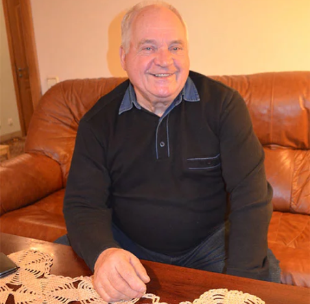
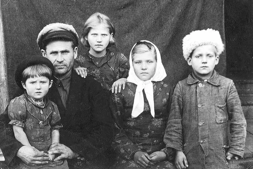
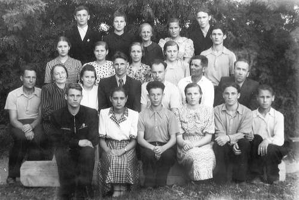

Дети на войне
Сын партизана
Детство закончилось в пять лет
Приказано расстрелять
Плохие шутки
Владимир Гончарик, доктор технических наук и член диссертационного совета БНТУ, записал свои воспоминания на простой белой бумаге. Их получилось 171...
Они не знали телефонов и компьютеров, игрушки видели лишь те, что делали сами, а в голове не держали столько информации, сколько впитывают современные дети. Видимо, поэтому многие события, горькие, страшные, необъяснимые, остались в памяти даже спустя семь десятилетий. Владимир Гончарик, доктор технических наук и член диссертационного совета БНТУ, записал свои воспоминания на простой белой бумаге. Их получилось 171...

Ему было пять, когда началась война, но он помнит себя еще раньше. Как на лошадях перевозили родной дом с хутора в деревню Дерти Червенского района: бревна грузили на телеги, а дети садились сверху. Как на патефоне слушали песни Руслановой. Вскоре папа купил еще одну новинку – аккумуляторный радиоприемник: 22 июня 1941 года из него вся деревня узнала, что началась война.
Через неделю в их огород рядом с домом вражеские самолеты ночью сбросили две бомбы. Виной стал все тот же приемник: чтобы улучшить слышимость, отец присоединил к нему две десятиметровые жерди и натянул между ними антенну. Фашисты решили уничтожить этот странный объект. В доме посыпались стекла, но, к счастью, все остались целы.

Николай Иванович Гончарик со своими детьми Галей, Диной, Надей и Володей. Июль 1944 года
С первых дней войны отец, Николай Иванович Гончарик, участвовал в организации партизанских отрядов Минщины. Изредка приходил домой переночевать и уходил снова. На руках у мамы осталось пять детей – младшая Галя только родилась.
В конце августа в деревню приехал карательный отряд из 30 человек и обосновался в колхозной конторе в ожидании подпольщиков. Папа, не зная об этом, пришел домой. Его забрали гитлеровцы.
– Помню, как все мы вцепились в отца, он обнял нас, поцеловал. Его увели в контору, куда привезли еще четырех председателей колхозов и сельсоветов. После допросов всех ждала смерть.
Расстреливать вели в три часа ночи. 15 нацистов, по трое на каждого приговоренного, подвели пленников к болоту и жестами приказали раздеться и опуститься на колени.
– Папа заметил, что каратели еще держат винтовки на плече, и присел на землю, якобы снять сапоги, а потом резко рванул наутек. Следом бросились бежать остальные. Отец слышал стрельбу, крики, чавканье сапог по болотной жиже, видел фашистов в метрах 20 от себя. Они идут – и он идет. Они остановились – замер и он. Так и шли. Только когда каратели стали стрелять в другую сторону, Николай Гончарик понял, что его потеряли. Он был единственным из пятерых, кто выжил в ту ночь.
Наутро Володин дедушка Иван Гончарик, узнав, что ночью расстреляли людей, схватил лопату и побежал на место казни. Раскопал и, не увидев там сына, сообщил невестке и внукам, что он жив.

Все выпускники 10-го класса Червенской средней школы № 2 – дети войны. Май, 1954 год
Всю осень отец провел в лесу, изредка навещая дом, чтобы поесть и согреться. Мужская работа легла на плечи мальчишек: заготовка дров, вырубка сушняка на болоте, лошади-коровы-свиньи. Как-то в сентябре 1942 года во двор к ним приехал солдат, который перешел на сторону врагов. Он шепотом сказал Володиной маме, что их семью приказано расстрелять. Ей ничего не оставалось, как собрать в охапку пятерых малышей и уйти на болото. Уже оттуда они видели, как полыхал родной дом.
Голод, холод, одни в лесу. Старшего сына отправили на поиски отца. Коля искал два дня и наконец встретил партизана, который помог дойти до папы. Семья воссоединилась, осели в землянках. Вскоре Николая Гончарика перевели в другой партизанский отряд командиром взвода разведки. Там Володя подружился с оружейником, помогал ему в подсобных работах и даже знал, где находятся тайники с зарядами:
– В свой 8-й день рождения мне захотелось самостоятельно подорвать пенек, поднес зажженную спичку – и капсула взорвалась в руке. Мне оторвало пальцы левой руки, побило лицо, глаз. Около трех месяцев пробыл один в лесном госпитале. Ослабшим вернулся в отряд.
Люди на болоте
Партизаны подорвали несколько участков железной дороги, отрезав врагам путь в населенные пункты, и немцы начали зачистку леса, где располагался отряд им. Чапаева. Нужно было выбираться, бросая коров, лошадей, идти через болото, чтобы вырваться из блокады. Изможденные дети шли с матерью: старший Коля нес на руках маленькую Галю, Володя шел босиком, потому что потерял в болоте сапоги. А на выходе вместо долгожданного спасения всех подстерегала засада. Гитлеровцы стали стрелять по людям, началась паника, и в этом хаосе дети потеряли маму с сестрой.
Шли одни. Теплые майские дни сменялись ночными заморозками, хотелось есть, пить, спать, просто согреться. От холода и боли в ногах у Володи начались галлюцинации, мерещилось, будто сидит он в теплой землянке. Какая-то женщина в плюшевой курточке, как у мамы, взяла его за руку и буквально вытащила из сладкого сна, который был бы концом всех мучений. Он очнулся и догнал своих. А потом снова попали под обстрел.
– Мы забрались под лапки молодого ельника и прижались к земле. И когда фашисты подошли с пулеметами прямо к нам, Коля подорвал себя гранатой. Мне засыпало глаза землей, Галку ранило в руку, полилась кровь, а Коля лежал лицом вниз. Брат всегда говорил, что в плен не сдастся.
Где-то в полукилометре от этого места фашисты убили их мать. Но они узнали об этом чуть позже. Когда вышли из тюрьмы и только из-за раненой сестры не попали на отправку в Германию, когда Володя повел всех снова в лес искать партизанский отряд и когда наконец нашли сестру Дину, а потом и отца.
P.S. …Партизан Николай Гончарик женился на родной сестре погибшей жены, они вместе воспитали шестерых деток, которые окончили институты, сделали карьеру и прожили долгую жизнь. Владимир Гончарик стал директором научно-исследовательского института, защитил кандидатскую, а потом и докторскую диссертацию, до сих пор работает с аспирантами. Правда, в детстве мечталось о другом – стать летчиком, но из-за травмы левой руки не смог.